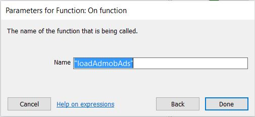
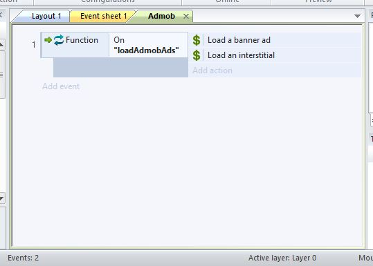

In this chapter, we will insert our new Cordova AdmobFree object into our project, and also add a Function object. Then, we will create a new event sheet called Admob for purposes of creating 3 functions that will load and show our Admob ads.
In Chapter 2, we added a touch event to the Event sheet 1. In this chapter we will add the Cordova AdmobFree object to our Construct 2 game and also create the new Admob event sheet.
Insert a new object. In the ‘Insert New Object’ dialog that appears, scroll down and look for the new object called ‘CordovaAdmobFree’ under the section Plugins by Josek5494. See Fig 4-1 below. The red arrow shows the location of the object. It has a green dollar sign.
After you have inserted the CordovaAdmobFree object to your project, you should be able to see it in the Project panel on the right, as indicated by the red arrow in Fig 4-2 below.
Next, we are going to create a new Event Sheet called Admob and create 3 functions within the Admob event sheet. First, add a Function object to your project as shown in Fig 4- 3 below. The Function object would allow us to create functions.
Then, create a new event sheet called ‘Admob’. To add a new event sheet, right-click on the Event Sheet Folder in the Project panel as shown in Fig 4-4 below. Then select ‘Add event sheet’.
After adding the new event sheet called Admob, your screen should look something like Fig 4-5 below.
We are now ready to add our 3 functions to our new Admob event sheet. Go ahead and click on the button ‘Add event’ in the Admob event sheet. See 4-6 below.
After clicking on the ‘Add event’ button, the ‘Add event’ window will open. Select the Function object as shown in Fig 4-7 below.
In the next window that opens, select the ‘On Function’ event as shown in Fig 4-8 below.
You will then be asked to give a name for your function. Call it ‘loadAdmobAds’ as shown in Fig 4-9 below.

After creating the new function, your Admob event sheet should look like Fig 4-10 below.
We will now add the actions to the function. The first action is to load a banner ad. To add an action, click on the button ‘Add action’ as shown in Fig 4-11 below.
Then, select the object CordovaAdmobFree as shown in Fig 4-12 below. The object is the one with the green dollar icon as indicated by the red arrow.
Then, in the next screen, select ‘Load a banner’ action as indicated by the red arrow in Fig 4-13 below.
Then, in the next screen as shown in Fig 4-14 below, you can see the windows called ‘Parameters for CordovaAdmobFree’ with some default settings. The default settings is to show the banner with the position: TOP CENTER and to overlap the contents. You may change the position if you like. But I will just leave at the default position.
At this point your Admob event sheet should look something like Fig 4-15 below.
We are now going to add another action called ‘Load an interstitial’. Repeat what you have done above as shown in Fig 4-11 and Fig 4-12, but when it comes to choosing the action, select ‘Load an interstitial’ as shown in Fig 4-16 below.
In the next window as shown in Fig 4-17, you will note that the default setting for Overlap is True. No need to change it.
At this stage, you should have two actions added to the function ‘loadAdmobAds’ as shown in Fig 4-18 below.

This concludes this chapter. In the next chapter, we will add 2 more functions to the Admob event sheet.